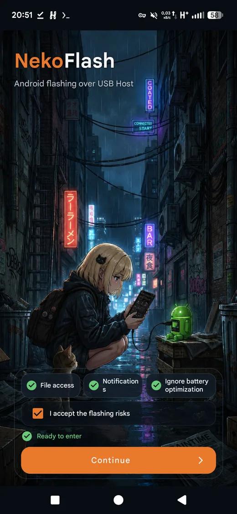
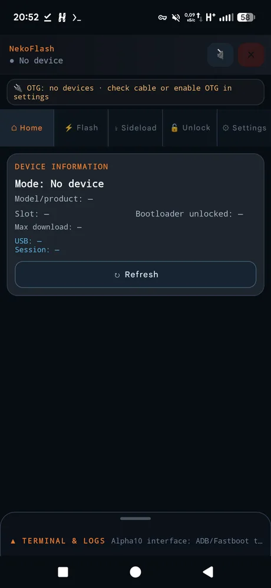
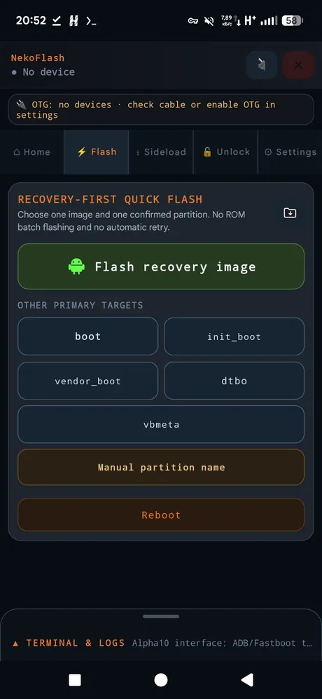
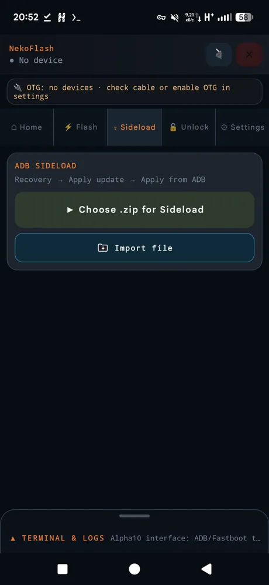
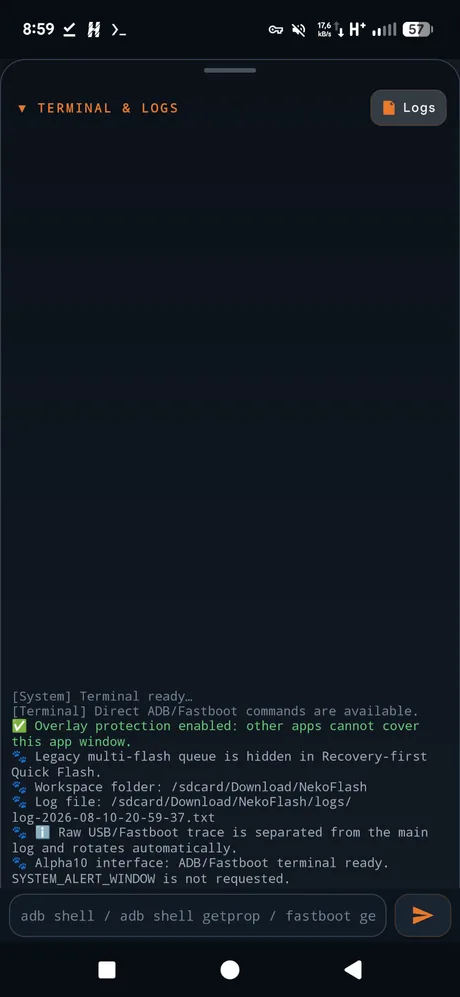
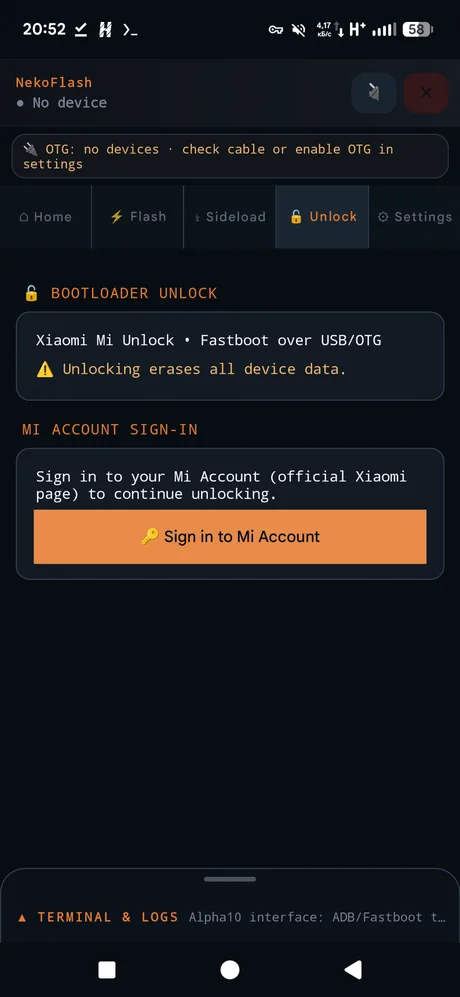

Flash Android
from Android.
NekoFlash is an open-source Android USB Host utility for ADB, Fastboot, Recovery / ADB Sideload, Quick Flash and Xiaomi Mi Unlock — directly from a phone or tablet, without a PC and without root on the host device.

ADB, Fastboot and recovery workflows in one Android app.
Protocol traffic is implemented inside NekoFlash and sent through Android USB Host. It does not bundle desktop adb or fastboot executables.
ADB over USB OTG
Device discovery and authentication, shell, push/pull, APK install, reboot services and diagnostics from the host Android device.
Fastboot flashing
Inspect variables and partitions, flash or boot images, erase/format supported partitions, switch slots and run supported OEM commands.
Recovery & ADB Sideload
Send a compatible update ZIP from Android when the target is in Recovery → Apply update → Apply from ADB mode.
Recovery-first Quick Flash
Flash recovery, boot, init_boot, vendor_boot, dtbo, vbmeta or another confirmed partition without a desktop computer.
Xiaomi Mi Unlock workflow
Optional Xiaomi account/unlock flow using official Xiaomi HTTPS endpoints and Fastboot over USB.
Terminal & diagnostics
Built-in command terminal, compact logs, protocol traces and sanitized sharing helpers for troubleshooting USB sessions.
No desktop bridge in the middle.
Prepare the host
Install NekoFlash on an Android 8.0+ phone or tablet with USB Host / OTG support.
Connect the target
Use a data-capable USB OTG or USB-C cable and put the target in ADB, Recovery/Sideload or Fastboot mode.
Choose the operation
Verify the detected device, partition, slot and file, then run the selected ADB, Fastboot, Sideload or unlock workflow.
Designed for real Android service workflows.





Useful answers for common Android flashing searches.
These guides explain the workflow boundaries and safety checks rather than encouraging blind flashing.
Fastboot from Android without a PC →
Connect another Android device over OTG, verify Fastboot mode and understand safe vs. mutating operations.
Flash recovery / TWRP from Android →
How Quick Flash handles recovery and boot-chain images, and why the correct target partition matters.
ADB Sideload from an Android phone →
Send an update ZIP from the host phone while the target is in Recovery / ADB Sideload mode.
Common questions
Can I use Fastboot from an Android phone without a PC?
Yes. NekoFlash implements Fastboot protocol traffic over Android USB Host, so a compatible Android phone or tablet can act as the host. The target still needs to be in Fastboot mode and the cable must carry data.
Does NekoFlash require root?
No root is required on the host Android device for the documented USB Host workflows.
Can NekoFlash flash TWRP or another recovery image?
NekoFlash can flash a compatible recovery image to a confirmed target partition through Fastboot. Device layouts differ: some devices have a recovery partition while others use boot-chain partitions such as boot, init_boot or vendor_boot. Use only images and partition instructions intended for the exact device.
Does USB-C to USB-C work?
It can, but Android may negotiate the wrong data or power role. The NekoFlash phone must be the USB host and the target must appear as the connected USB device before you start a write operation.
Does ADB Sideload work like normal ADB?
No. Recovery / ADB Sideload is a separate target mode. Put the target recovery into “Apply update → Apply from ADB”, then select the update ZIP in NekoFlash.